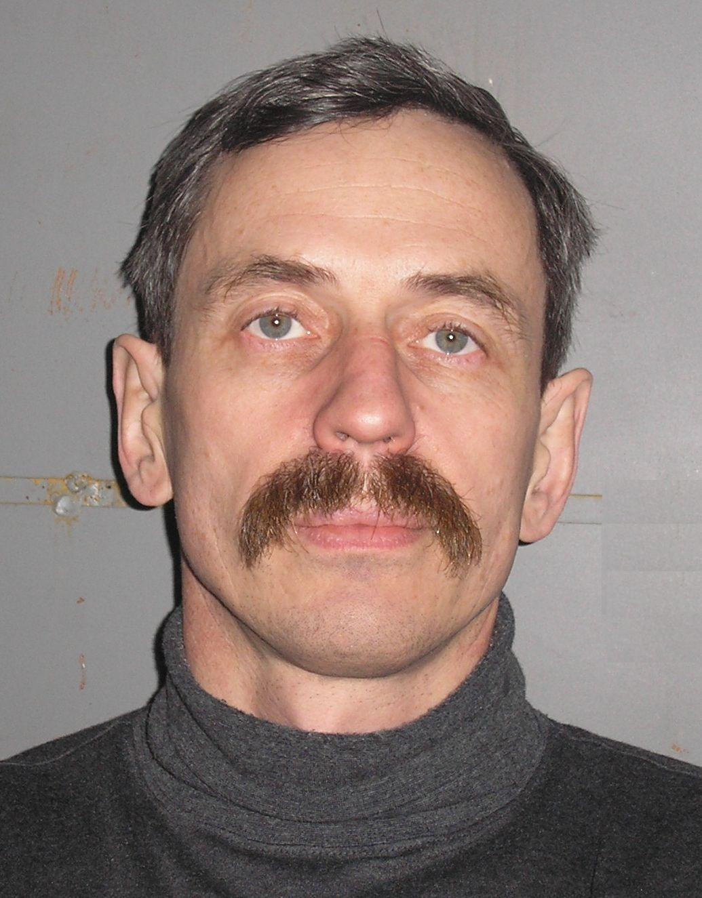

<div class="main-section">
  <!--  <div class="main-aside">-->
  <!--    <p>main works!</p>-->
  <!--  </div>-->
  <div class="tutor-information">
    <div class="about-myself">
      <div class="section-title">Про себе</div>
      <div class="myself">
        
        <div class="myself-desc">
          <div class="surname-desc tutor-details">Прізвище</div>
          <div class="name-desc tutor-details">Ім'я</div>
          <div class="patronymic-name-desc tutor-details">По-батькові</div>
          <div class="birthday-date-desc tutor-details">Дата народження</div>
          <div class="info-desc tutor-details">Коротка інформація</div>
        </div>
        <div class="myself-details">
          <div class="surname tutor-details">Івохін</div>
          <div class="name tutor-details">Євген</div>
          <div class="patronymic-name tutor-details">Вікторович</div>
          <div class="birthday-date tutor-details">19 лютого 1960</div>
          <div class="info tutor-details">доцент, доктор фіз.-мат. наук</div>
        </div>
      </div>
    </div>
    <div class="section-title">Біографія</div>
        <div class="tutor-description">Вступив до КНУ iменi Тараса Шевченка на факультет кібернетики у 1977 році,
          спецiальнiсть - прикладна математика. Закінчив університет у 1982 році.
          Захистив кандидатську дисертацію у 1986 році, докторську дисертацію
          - у 2012 році. З 1989 року - викладач кафедри, з 1995 року - доцент кафедри.
        </div>
    <p>Хоббі: баскетбол</p>
    <p><span class="contact-info">Контакти</span>: (роб.тел.)258-89-84</p>
    <p><span class="contact-info">E-mail</span>: ivohin@univ.kiev.ua</p>
    <div class="section-title">Спортивнi змагання та результати</div>
    <p>Чемпiонати/турніри Кубок Баглея (2008 р.) - 2 мiсце</p>
    <p>Сайт ветеранів баскетболу КНУ <a href="vbasket.univ.kiev.ua">vbasket.univ.kiev.ua</a></p>
  </div>
</div>
